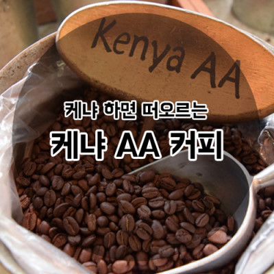
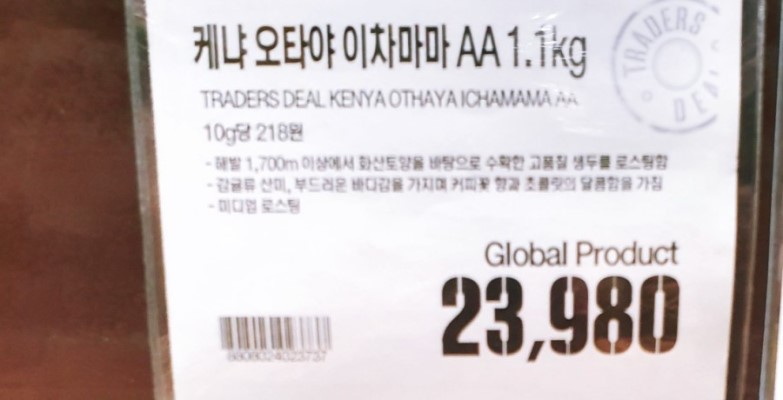

케냐의 생두는 고지대 1,500m~2,000m에서 재배되고 생산량의 60%가 소규모농가에 의해 생산된다고 한다.
등급같은 경우 스크린사이즈에 의해 결정되는데, 크기가 클수록 좋은 등급으로 분류가 된다고 한다.
재배는 고지대 우기에 맞춰 10월에서 3월, 5월에서 8월 연 2회 재배한다고 한다.

케냐AA의 맛은 특유의 쌉쌉할 맛과 중후한 바디감이 있으며, 상큼한 신맛과 과일의 단맛이 일품이다.
케냐키암부AA의 맛은 정통 케냐 스타일의 쌉쌉하고 부담없는 상큼한 맛이 있으며, 풍부한 단맛을 가지고 있다고 한다.
새콤달콤한 와인과 딸기의 향미가 느껴진다고 한다.

케냐오티야AA의 맛은 또렷한 과일의 상큼함과 달콤한 고퀄리티 케냐의 참맛이 느껴진다고 한다.
감귤, 강렬한 딸기, 달콤함이 키워드다.